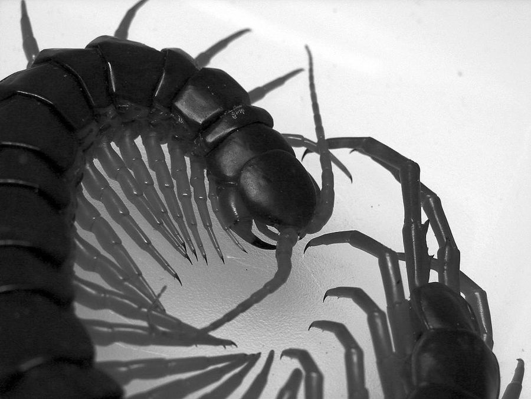

जायंट सेंटीपीडGiant Centipede
Scolopendra subspinipes · Scolopendridae · MYR-0006

- Scientific name वैज्ञानिक नाम
- Scolopendra subspinipes Leach, 1815
- Family कुल
- Scolopendridae
- Hindi हिंदी
- जायंट सेंटीपीड
- Local names स्थानीय नाम
- giant centipede, bada kankhajura, gojar, scolopendra subspinipes, red centipede, vishaila kankhajura
- Status here यहाँ की स्थिति
- native
- Movement आवागमन
- Resident, here all year
- Known from कहाँ दर्ज
- Others have published records from the wider Awadh–Purvanchal plain, none yet from Basti–Ayodhya अवध–पूर्वांचल से दूसरों के प्रकाशित अभिलेख, बस्ती–अयोध्या से अभी नहीं
- IUCN IUCN
- not evaluated
- Review समीक्षा
- not yet reviewed
When to look कब देखें
Expected mainly in April, May, June, July, August, September, October, November. मुख्यतः अप्रैल, मई, जून, जुलाई, अगस्त, सितंबर, अक्टूबर, नवंबर में अपेक्षित।
Tell it apart from इनसे अलग पहचानें
जायंट सेंटीपीड / Giant Centipede
Scolopendra subspinipes Leach, 1815 — Scolopendridae
जायंट सेंटीपीड — पुरानी ईंटों, लकड़ी के कुंदों और अंधेरे कोनों में रहने वाला एक विशाल, फुर्तीला और जहरीला कानखजूरा (सेंटीपीड)। इसका शरीर चमकीला लाल-नारंगी या कत्थई होता है और इसके इक्कीस जोड़े पीले-नारंगी पैर होते हैं। इसके मुंह के पास दो बेहद मजबूत और जहरीले नुकीले जबड़े (फोरसिप्यूल्स) होते हैं, जिनसे यह कीड़ों, मेंढकों और छिपकलियों को पकड़कर तुरंत मार डालता है।
Quick Identification त्वरित पहचान
| Feature | Description |
|---|---|
| Habit | Very large, fast-running, nocturnal predatory scolopendrid centipede |
| Coloration | Rich reddish-orange to dark brownish-red with bright yellow or orange legs |
| Segments | Exactly 21 body segments, each bearing a single pair of ambulatory legs |
| Forcipules | Massive venomous modified front legs curved under the head like sharp fangs |
| Terminal Legs | Long, thickened posterior legs held backward, used for defence and sensing |
Field tip: Lift old roofing tiles or timber logs near village cattle sheds at night; watch for an exceptionally large, glistening reddish centipede darting with breathtaking speed.
हिंदी — कैसे पहचानें: विशाल लाल-नारंगी शरीर, इक्कीस जोड़ी चमकीले पीले पैर, मुंह के पास तीखे जहरीले जबड़े, और बिजली जैसी तेज रफ्तार।
Morphology आकारिकी
Adult description: Large, robust, dorsoventrally depressed chilopod centipede. Head roundly ovate, smooth, bearing four ocelli on each side clustered together; antennae long, 18 to 20 segmented, basal five to six articles smooth, remainder densely puberulous. Prehensorial coxosternite large, prosternal teeth typically four plus four on dental plates. Body composed of 21 leg-bearing segments, covered dorsally by smooth chitinous terga; terga rich reddish-chestnut, orange-brown, or deep mahogany; complete paramedian longitudinal sulci present from tergite 2 to 20. Legs 21 pairs, slender, bright yellow or orange, each terminating in a sharp claw with two basal spines. Terminal pair of legs noticeably thickened, elongate, prefemur armed with three to four ventral spines and a prominent apical spine process.
हिंदी: यह एक विशाल और शक्तिशाली कानखजूरा है।
Behaviour & Ecology व्यवहार और पारिस्थितिकी
- Nocturnal Ambush: Remains concealed in dark damp voids during the day; emerges after twilight to patrol walls, leaf litter, and tree bases.
- Venom Apparatus: Injects complex neurotoxic, cardiotoxic, and proteolytic venom through sharp hollow forcipules, paralyzing prey in seconds.
- Predatory Aggression: Fearless predator capable of subduing prey larger than itself, including tree frogs, small snakes, and mice.
- Maternal Brooding: The female curls her entire body tightly around her egg clutch, cleaning them constantly to prevent fungal infection.
हिंदी: यह रात में शिकार के लिए निकलता है। इसके नुकीले दांतों में तेज जहर होता है जिससे यह मेंढकों और छिपकलियों को भी पंगु बना देता है। मादा अपने अंडों को लपेटकर सुरक्षा करती है।
Life Cycle / Phenology जीवन चक्र
- Courtship: Elaborate nocturnal courtship dance where male deposits a spermatophore that female picks up into her gonopore.
- Egg Guarding: Female lays a clutch of 30 to 50 soft white eggs in a secluded subterranean cavity, fasting completely while brooding.
- Juvenile Care: Mother continues protecting pale white juveniles until their first moult when they disperse to hunt independently.
- Longevity: A hardy, long-lived terrestrial arthropod capable of surviving five to ten years in wild microhabitats.
हिंदी: मादा जमीन के नीचे तीस से पचास अंडे देती है और जब तक बच्चे बड़े नहीं हो जाते, वह कुछ खाए बिना उनकी पहरेदारी करती है।
Host Plants or Prey आहार
- Invertebrates: Cockroaches, crickets, grasshoppers, large spiders, and earthworms.
- Small Vertebrates: Asian common toads, gecko lizards, juvenile blind snakes, and nestling mice.
- Carrion: Readily scavenges freshly dead small vertebrates in damp shelters.
हिंदी: यह मांसाहारी है। यह कॉकरोच, झींगुर, मकड़ियों, छिपकलियों, छोटे मेंढकों और चूहों के बच्चों का शिकार करता है।
Predators / Natural Enemies शत्रु
- Birds: Barn owls, spotted owlets, and daytime-foraging common mynas snatch centipedes roaming across ground.
- Mammals: Grey mongoose (Urva edwardsii) and hedgehogs possess partial immunity to centipede venom and hunt them.
- Reptiles: Bengal monitor lizards (Varanus bengalensis) dig them out of rotting logs, while Indian garden lizards avoid adults.
हिंदी: उल्लू, नेवला और गोह (मॉनिटर लिजर्ड) इनका शिकार करते हैं। नेवले पर इनके जहर का खास असर नहीं होता।
Agricultural / Human Relevance कृषि प्रासंगिकता
- Biological Pest Predator: Efficient top invertebrate predator consuming crop-damaging crickets, grasshoppers, and pest cockroaches.
- Venomous Bite Hazard: A bite causes intense, radiating throbbing pain, severe local swelling, and burning sensation in humans; requires medical care.
- Human Caution: Often enters rural houses during heavy monsoon flooding; villagers shake out footwear and bedding as a precaution.
हिंदी: यह घरों और बागीचों में हानिकारक कीड़ों और कॉकरोच को मारकर साफ रखता है। इसके काटने पर बहुत तेज दर्द और सूजन होती है, इसलिए सावधानी जरूरी है।
Expected Locally स्थानीय रूप से अपेक्षित
Not a field record. Written from published accounts for eastern Uttar Pradesh. No confirmed local sighting yet — if you have seen it, that is what the atlas needs.
अभी तक स्थानीय पुष्टि नहीं। यह विवरण प्रकाशित स्रोतों से है, किसी अवलोकन से नहीं।
Expected in dark sheltered voids, beneath fallen logs, in cattle sheds, and old brickwork across Basti, Ayodhya, and neighbouring Awadh districts. GBIF holds published records from the wider Awadh–Purvanchal plain, none yet from Basti–Ayodhya. To confirm this species for the Atlas, provide a clear photograph showing habit and 21 leg pairs, along with date, time, and specific location.
Distribution वितरण
Global range: Widespread across the Indo-Malayan, Australasian, and pantropical regions worldwide through ancient and modern transport.
In India: Found across the length and breadth of India from the Himalayan foothills to the southern peninsula.
In Uttar Pradesh: Recorded from rural and urban environments in Gorakhpur, Lucknow, Varanasi, and Ayodhya.
In Basti district / eastern UP: Expected around old masonry ruins, cattle sheds, and dense mango orchard margins throughout Basti.
हिंदी: यह विशाल कानखजूरा पूरे भारत और दुनिया के गर्म देशों में पाया जाता है। उत्तर प्रदेश के पुराने मकानों और बागीचों में यह बहुत आम है।
Research Questions शोध प्रश्न
- What is the primary prey biomass captured by Scolopendra subspinipes in rural Awadh homesteads? / अवध के ग्रामीण घरों में यह कानखजूरा मुख्य रूप से किन जीवों का शिकार करता है?
- How does heavy monsoon rainwater flooding force centipedes from soil refuges into human habitations? / बरसात में पानी भरने पर यह जमीन से निकलकर घरों के अंदर क्यों शरण लेता है?
- What is the duration of maternal egg-guarding fasting under tropical Gangetic conditions? / अंडों की रखवाली करते समय मादा कानखजूरा कितने दिनों तक बिना खाए-पिए रहती है?
- How do local grey mongoose neutralize the painful venomous bite during predatory encounters? / नेवला इसका शिकार करते समय इसके जहरीले दंश से खुद को कैसे बचाता है?
- What specific peptide toxins in the venom cause severe radiating pain in mammalian bites? / इसके जहर में कौन सा खास तत्व होता है जिससे इंसानों को असहनीय दर्द होता है?
Similar Species मिलती-जुलती प्रजातियाँ
| Species | How to tell apart | हिंदी |
|---|---|---|
| Scolopendra morsitans | Blue or dark-tipped legs with distinct ringed bands; smaller body size | पैरों पर नीली-काली धारियां, कुछ छोटा आकार |
| Scolopendra hardwickei | Striking alternating black and bright orange-yellow body bands | शरीर पर काले और नारंगी रंग की खूबसूरत पट्टियां |
| Rhysida longipes | Much more slender body; pale greenish-blue coloration; exceptionally long rear legs | बहुत पतला हल्का हरा-नीला शरीर, बेहद लंबे पिछले पैर |
Field rule: A very large, fast-moving reddish-orange centipede with 21 pairs of bright yellow legs and massive fangs hiding under logs identifies Scolopendra subspinipes.
Taxonomy & Classification वर्गीकरण
Original description. Described by William Elford Leach in 1815 as Scolopendra subspinipes in Transactions of the Linnean Society of London, 11, pp. 306–400.
Subspecies. Historically treated with numerous subspecies; currently recognized as a widespread polytypic species complex.
Family and order placement. Placed in the family Scolopendridae, order Scolopendromorpha, class Chilopoda.
IUCN status rationale. Not evaluated by the IUCN; abundant, resilient, and widely distributed across tropical Asia.
हिंदी: विलियम एलफोर्ड लीच ने 1815 में इसका वैज्ञानिक विवरण दिया था। यह स्कोलोपेंड्रिडी कुल का सदस्य है।
Photo Gallery फोटो गैलरी
No photos yet — add field photos to media/species/giant_centipede/ and run node scripts/sync_photos.js.
Photos needed आवश्यक फोटो
- [ ] Adult crawling across dark leaf litter showing orange-red body and yellow legs (पत्तों पर रेंगता हुआ लाल-नारंगी कानखजूरा)
- [ ] Close-up of head showing massive venomous forcipules (सिर के नीचे तीखे जहरीले जबड़ों का क्लोज-अप)
- [ ] Female coiled tightly in brooding posture around white eggs (अंडों के चारों ओर लिपटी हुई मादा कानखजूरा)
References संदर्भ
- Leach, W.E. (1815). A tabular view of the external characters of four classes of animals. Transactions of the Linnean Society of London, 11, pp. 306–400.
- Pocock, R.I. (1892). Myriopoda of the British Museum. Taylor and Francis, London.
- Attems, C. (1930). Das Tierreich: Scolopendromorpha, Walter de Gruyter, Berlin.
- Lewis, J.G.E. (1981). The Biology of Centipedes. Cambridge University Press, Cambridge.
- GBIF Occurrence Data — Scolopendra subspinipes Leach, 1815, India (2025).
Source file: species/fauna/myriapods/giant_centipede.md